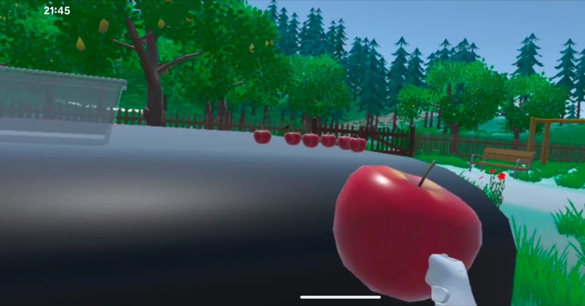
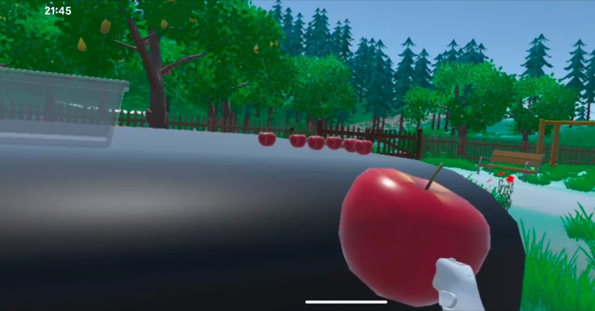
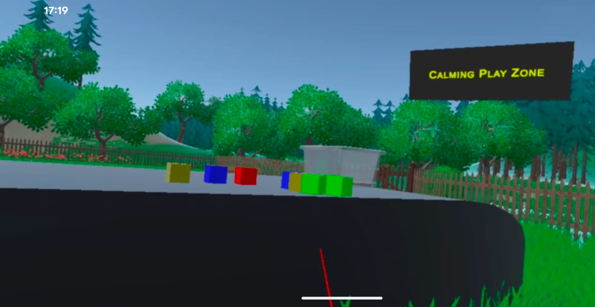
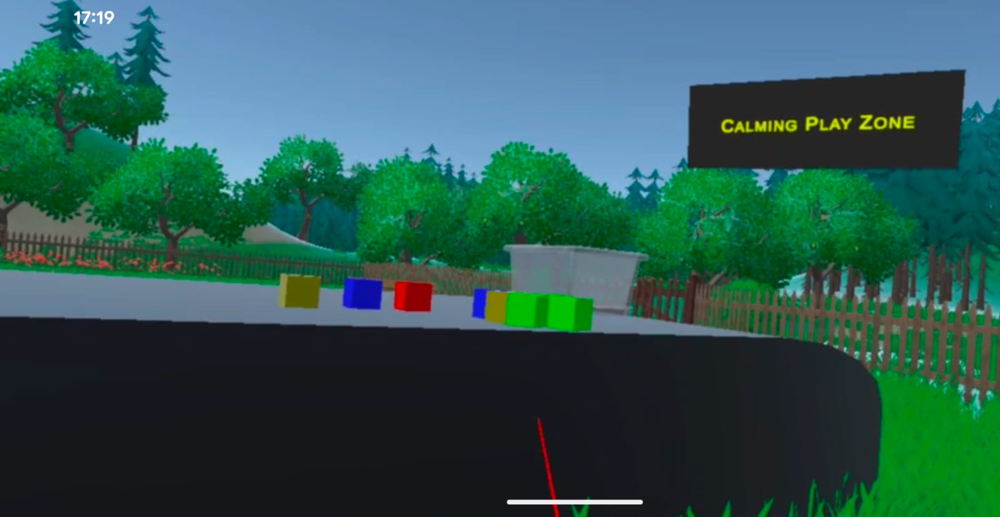
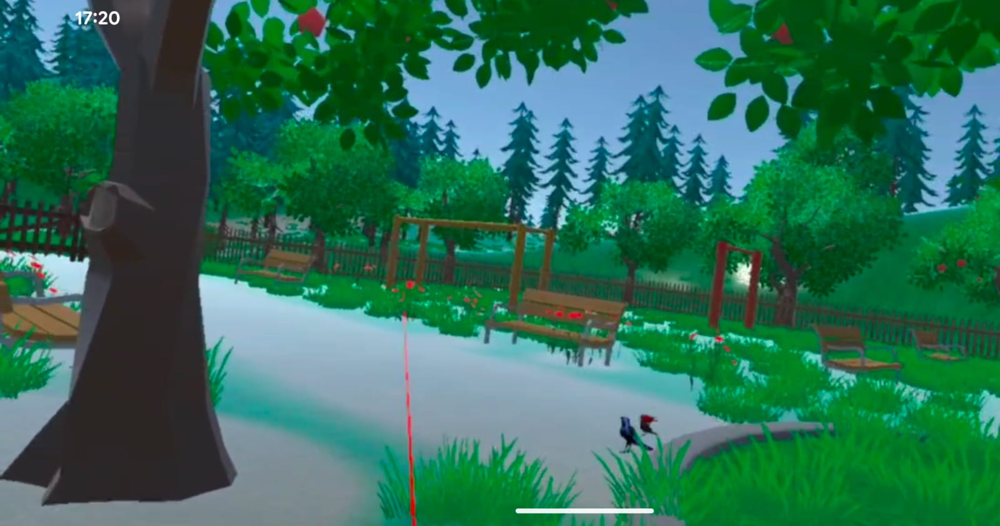
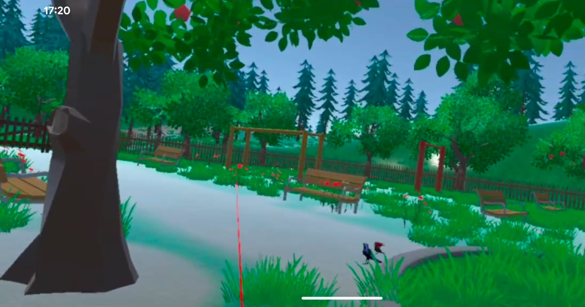

Project Summary
Project Title
Virtual Stress Relief Nature Park
Objective
To create a short stress-relief experience offering gentle interaction inside a nature-themed environment. The goal is to help users take a 2–5 minute mental break without pressure, scores, or complexity.
Target Audience
- University students dealing with academic stress
- Developers & desk workers with digital fatigue
- People who prefer hands-on relaxation over meditation
- New VR users who need simple interactions
Key Features
- VR-style apple picking with natural hand-grab logic
- Physics-based cube stacking for calming activity
- Soft lighting and ambient environment design
- User-friendly interaction with no learning curve
Technologies
- Unity 3D
- C# interaction scripts
- XR Interaction Toolkit
- OBS Studio (video capture)
- GitHub version control
Screenshots & Visuals
Screenshot 1 – Main Environment Overview

Screenshot 2 – Apple Picking Interaction


Screenshot 3 – Cube Stacking Interaction


Screenshot 4 – Spatial Layout & Environment Design


Demo Video (Full VR & Split-Screen)
The experience is presented in two formats to clearly show interaction, user flow, and movement: a full VR walkthrough and a split-screen demo showing both the user and the VR environment.
Full VR Experience Demo
Split-Screen Demo – User + VR Environment
Team Roles & Contributions
Pavan Kumar Goud – Team Lead & Interaction Developer
- Led the team and structured the full project workflow
- Developed apple picking & cube stacking systems
- Managed scene setup, physics tuning, and interactions
- Oversaw user testing and final prototype polish
- Created final portfolio layout and presentation
Charan Pasupuleti – Camera & Scene Integration
- Created camera paths and assisted with scene lighting
Sai Gurram – Environment & Spatial Design
- Designed terrain, trees, layout, and ambience
Srikanth Gajula – Asset Layout & Optimization
- Adjusted placements and performance tuning
Mohammed Ghouse Syed – Audio & Atmosphere
- Added ambient sound and balanced audio layers
Sapna Devi – Documentation Preparation
- Prepared the written documentation file
Final Prototype Showcase
A polished Unity scene demonstrating stable interaction, natural physics, and a visually calming environment.
Optional GIF (Apple Picking / Cube Stacking)
Process, Challenges & Solutions
Design & Development Process
- Researched existing wellness and VR experiences
- Selected interactions based on simplicity & relaxation
- Prototyped main interaction loops
- Improved lighting, physics, and layout after feedback
- Polished visuals, movement, and stability
Key Challenges & Solutions
- Inconsistent grabbing: Resolved by adjusting colliders & XR settings
- Cube instability: Fixed with tuned rigidbody mass and surface friction
- Performance issues: Improved via baked lighting & asset optimization
- User comfort: Adjusted player height & limited rotation to reduce discomfort
Future Improvements
- Additional nature environments
- Guided relaxation instructions
- Cross-platform support